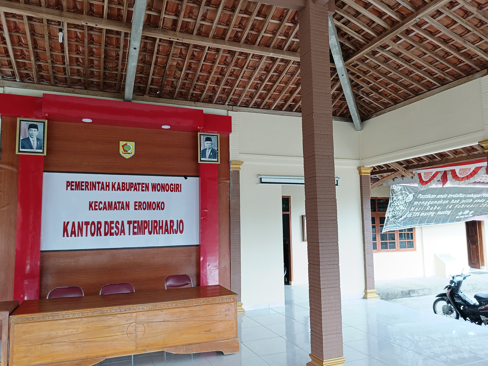

Loading...
Home
Profil
Profil
Visi Misi
Organisasi
Keuangan
RPJM Desa
RKP Desa
APB Desa
LRA Desa
Kegiatan
Kesehatan
PKK
Pemuda
Pembangunan
Kegiatan Lain
Berita
Visi dan Misi Desa

VISI
“Mewujudkan Desa Tempurharjo yang Maju, Religius dan Sejahtera”
MISI
Misi terdiri dari :
Meningkatkan kualitas infrastruktur desa untuk mendukung pertumbuhan ekonomi dan kesejahteraan masyarakat.
Mengembangkan potensi sumber daya manusia melalui pendidikan, pelatihan, dan pengembangan keterampilan.
Mempertahankan dan melestarikan budaya lokal serta meningkatkan partisipasi masyarakat dalam kegiatan budaya.
Meningkatkan pelayanan publik yang efektif dan efisien untuk kepuasan masyarakat.
Mendorong pengembangan usaha mikro, kecil, dan menengah (UMKM) sebagai motor penggerak ekonomi desa.